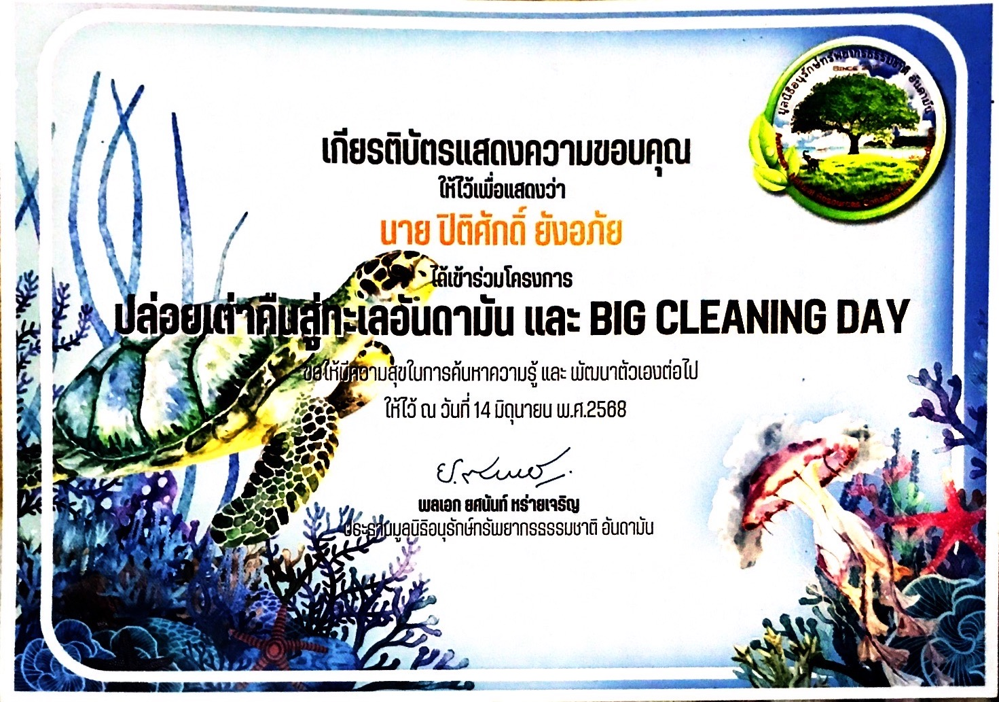
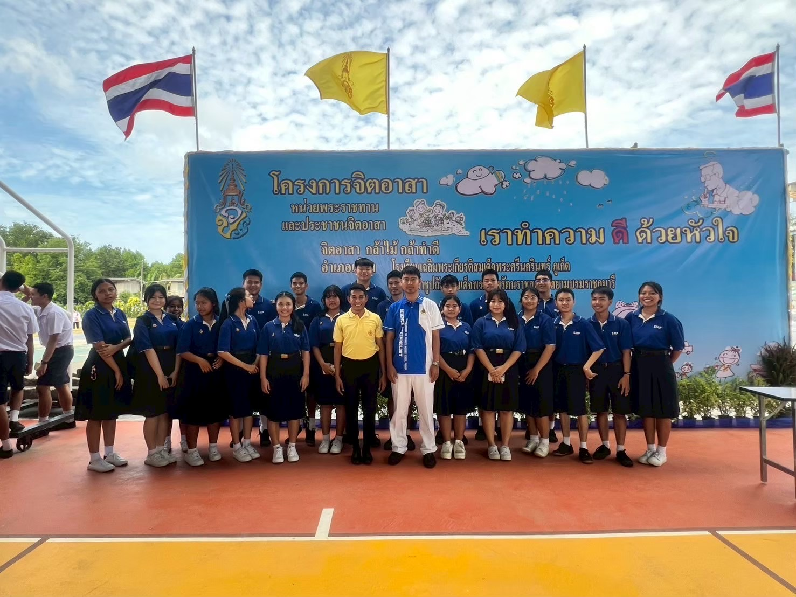
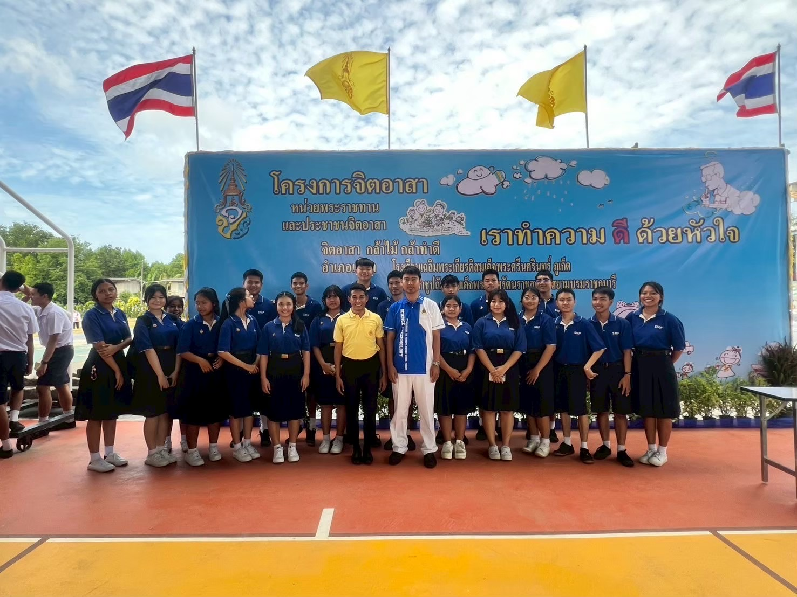

ร่วมกิจกรรมจิตอาสา ปล่อยเต่าคืนสู่ทะเลอันดามัน และ BIG CLEANING DAY


โดยผมและเพื่อนๆได้รับเลือกเป็นนักเรียนแกนนำมาร่วมกิจกรรมเก็บขยะบริเวณชายหาดเพื่อป้องกันไม่ให้เต่ากินขยะและปล่อยเต่าคืนสู่ ทะเล
เป็นนักเรียนแกนนําเป็นวิทยากรค่ายวิทยาการสายใยจากใจพี่สู่ใจน้อง ณ โรงเรียนบ้านกะตะ จังหวัดภูเก็ต

ผมได้เป็นนักเรียนแกนนำและได้รับหน้าที่เป็นวิทยากรเฝ้าฐานการเรียนรู้ คณิตศาสตร์ ให้น้องๆชั้นประถมต้นและประถมปลายเข้ามาทํากิจกรรม ที่ได้ทั้งความสนุกสนานและความรู้จากฐานนี้
ร่วมโครงการจิตอาสา กล้าไม้ กล้าทําดี ปลูกต้นไม้ทดแทน
 

ผมและเพื่อนๆได้เป็นจิตอาสาตัวแทนของโรงเรียนในการเข้าร่วมปลูกป่าเพื่อสร้างสภาพแวดล้อมในโรงเรียนให้น่าอยู่ขึ้น